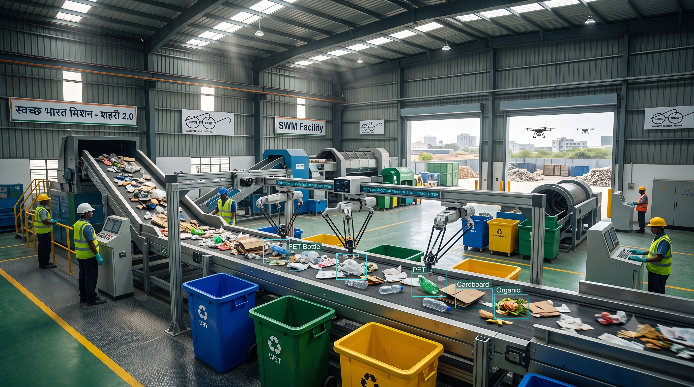

Powered by AI for Sustainable India
1.5L+ MT
Daily Municipal Solid Waste (MSW) in India
~70% Waste processed nationally (rising via SBM 2.0)
95%+ Sorting accuracy achieved by AI optical sorting
3,000+ dumpsites targeted for complete remediation
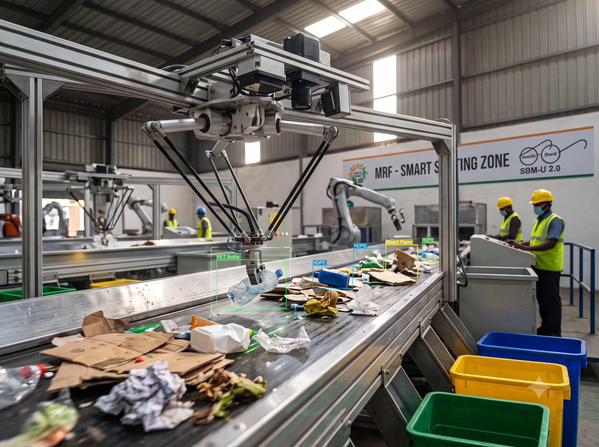
Robotic pickers and hyperspectral cameras that separate PET, HDPE, mixed paper, and organics at speeds impossible for manual labour.
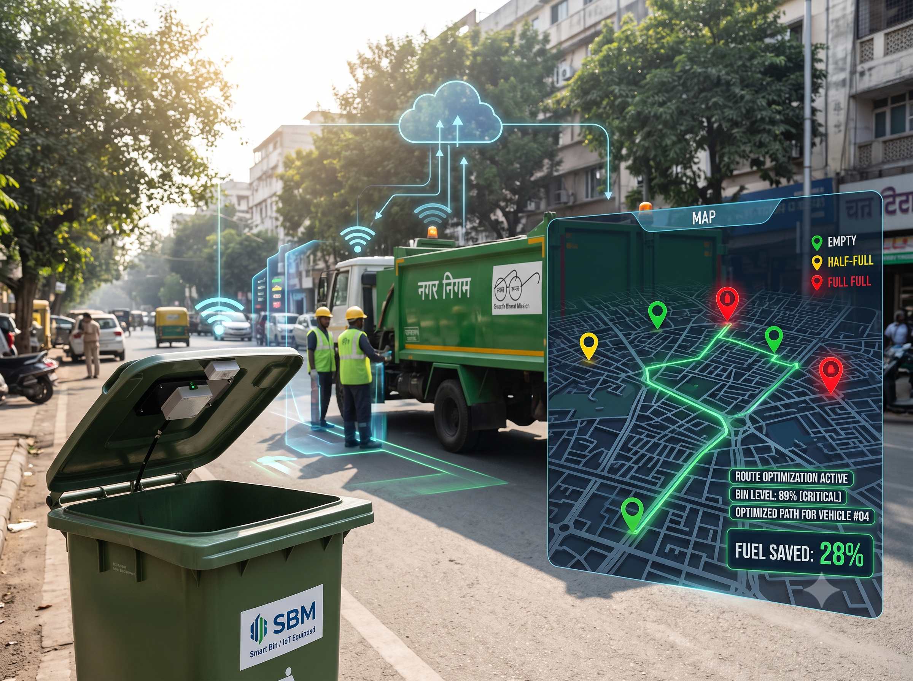
IoT and AI algorithms that route collection tippers based on real-time bin filling levels, cutting municipal fuel burn by up to 28%.
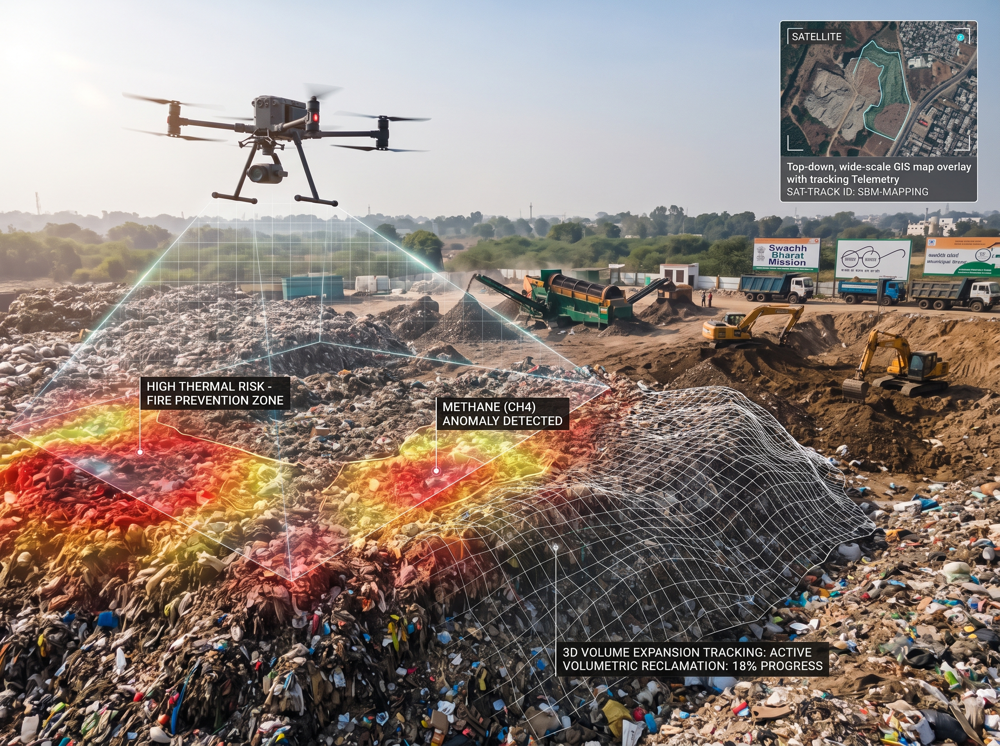
Automated computer vision tracking landfill volume expansion, detecting methane plumes, and preventing spontaneous dumpsite fires.
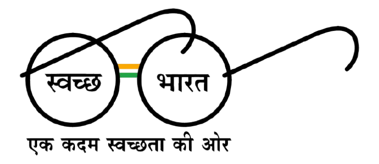
"Technology must be the prime enabler in converting 'Kachra to Kanchan' (Waste to Wealth). AI provides the precision that human scale alone cannot achieve."
The Urban Reality
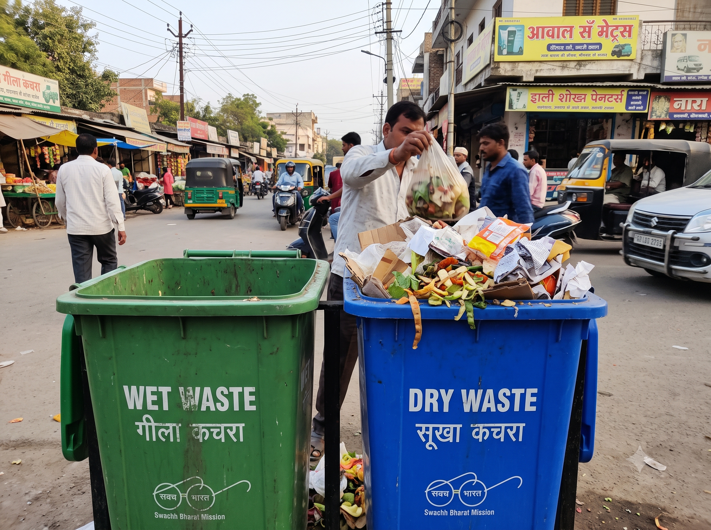
Despite dual-bin mandates (Green/Blue), mixed waste remains common in Indian tier-1 and tier-2 cities, contaminating dry recyclable items with wet biodegradable food waste.
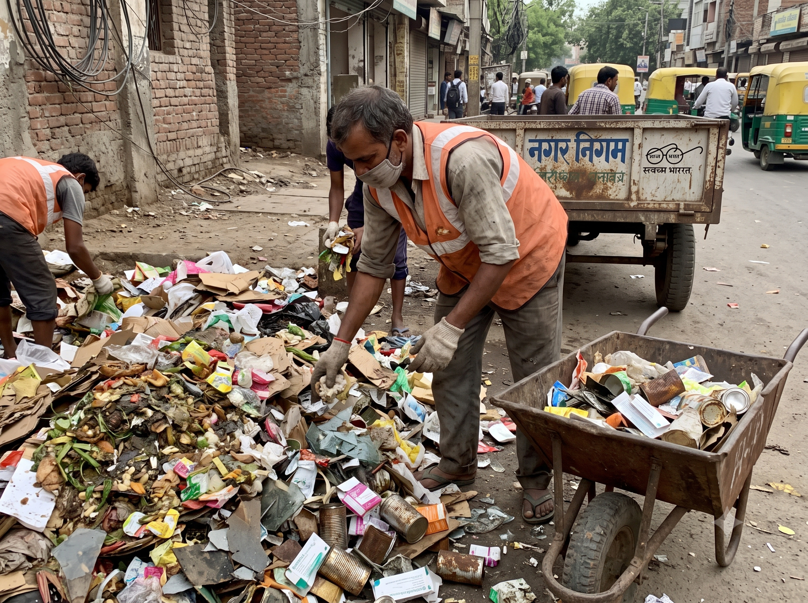
Millions of sanitation workers still handle hazardous, unsegregated trash manually, facing severe health risks, chemical exposure, and physical injuries.
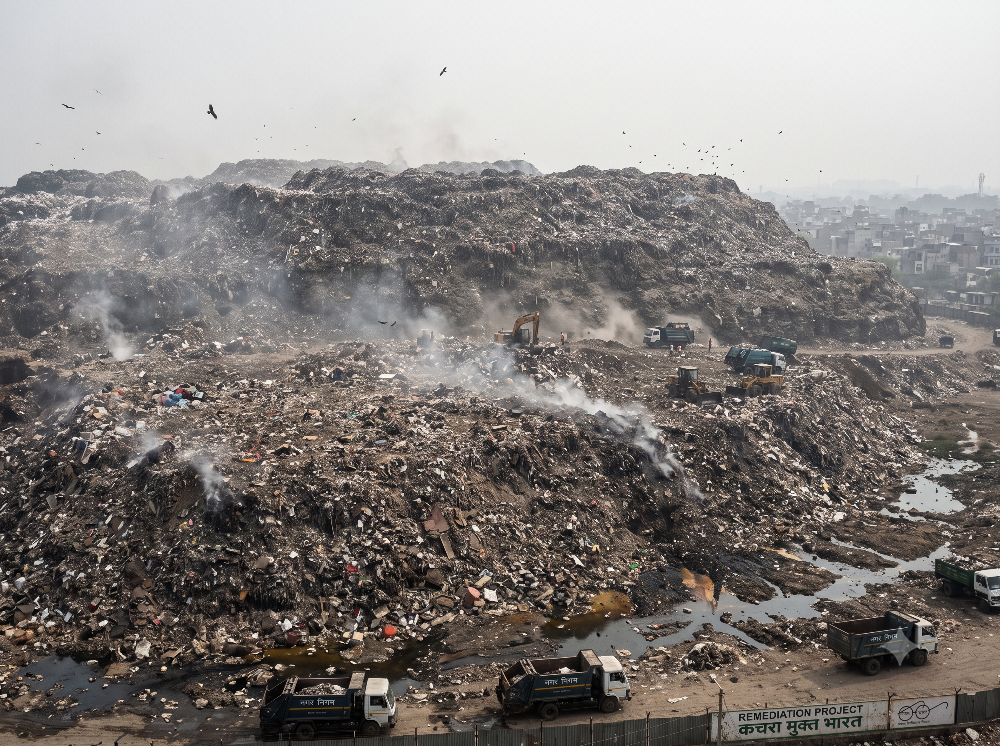
Decades of dumping have created multi-story trash mountains prone to recurring toxic fires, groundwater leachate, and heavy methane emissions.
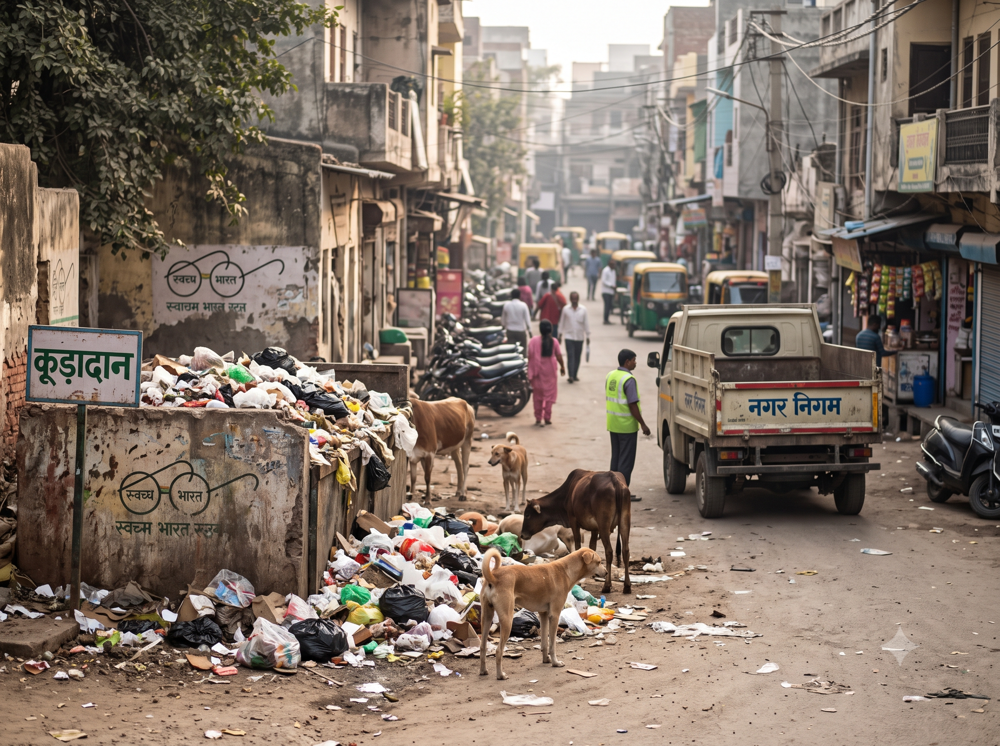
Fixed-route garbage trucks often pick up half-empty bins while overflowing dumpsters in crowded colonies remain unserviced for days.
| Waste Category | % of Total Indian MSW | Major Challenge | AI Intervention |
|---|---|---|---|
| Biodegradable / Wet | 50% – 55% | Moisture degrades recyclables, produces methane | Smart digester monitoring, automated segregation |
| Dry / Recyclables | 20% – 25% | Low pure-stream capture rate | Robotic optical sorting, polymer tagging |
| Plastics & Multi-layered | 10% – 12% | Hard to segregate by human eye | Deep-learning camera recognition (EPR tracking) |
| Inert & Construction | 10% – 15% | Clogs drains and fills dumpsites quickly | Drone volume calculation, automated tracking |
Technology Stack
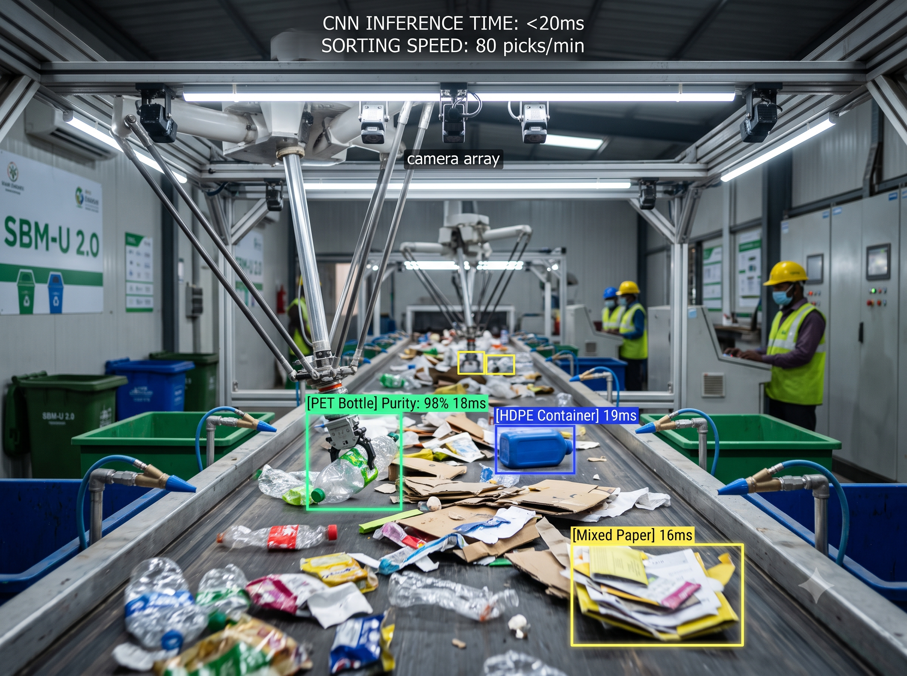
High-speed camera arrays capture items on conveyor belts at Material Recovery Facilities (MRFs). Convolutional neural networks identify material, brand, polymer type (e.g., PET vs. HDPE), and contamination level in under 20 milliseconds.
High-pressure pneumatic jets or delta robotic arms pick and sort items at up to 80 picks per minute with over 95% purity.
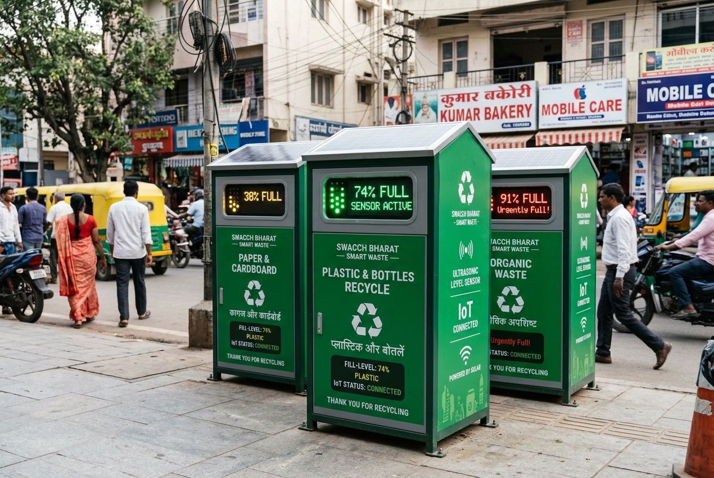
Micro-lidar and ultrasonic fill-level sensors installed inside community dhalaos (local collection bins) transmit fill percentages to a central municipal dashboard via 4G/NB-IoT.
Genetic pathfinding algorithms calculate daily dynamic routes for garbage compactors, minimizing diesel consumption and eliminating bin overflow.
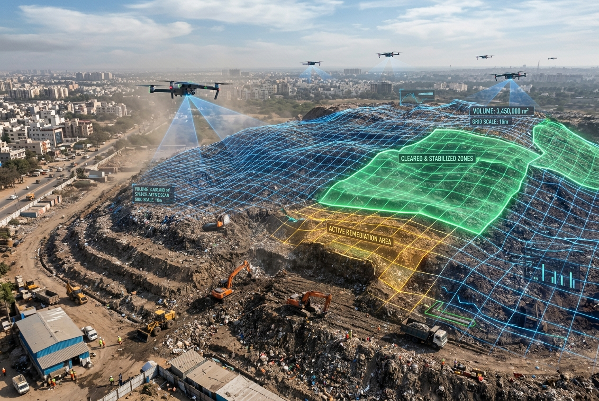
Autonomous drones capture photogrammetric data over landfills. AI vision models run 3D volumetric calculations to measure reclamation progress under bio-mining projects.
Accurate volume verification of cleared legacy waste, replacing slow and error-prone physical surveys.
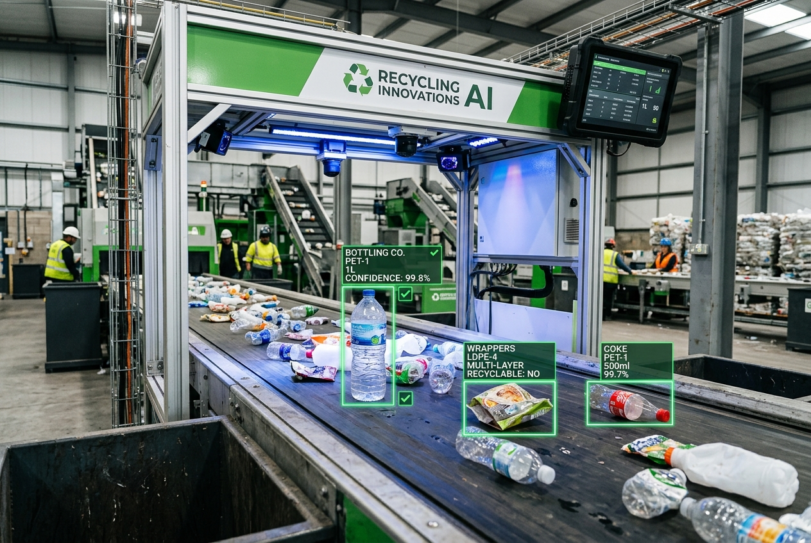
AI scans barcode remnants and brand packaging logos on plastic packaging entering recycling centres.
Creates transparent, tamper-proof audit trails for FMCG brands to verify plastic recycling credits under Indian CPCB mandates.
National Vision
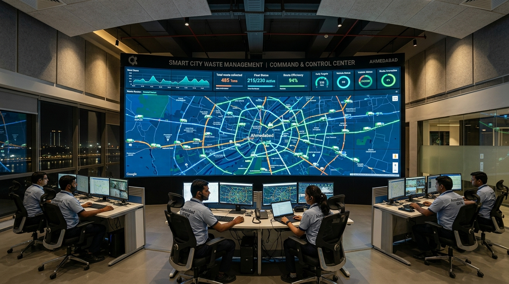
Zero unprocessed solid waste going to open dumping yards.
Upgrades municipal MRFs with automated optical sorters, ensuring organic waste goes directly to compost/biogas (CBG) units while plastics enter the circular supply chain.
Free up hundreds of acres of prime municipal land under bio-mining mandates.
Drone imagery combined with AI depth maps tracks trommel screen sorting speed, monitors soil reclamation metrics, and calculates land recovery in real time.
Dignified livelihood for waste pickers (Kabaadiwalas & Safai Mitras).
Shifting workers from toxic manual sorting lines to roles as technicians, drone pilots, and dashboard supervisors in tech-enabled MRF facilities.
Fair, data-driven cleanliness rankings across Indian cities.
Computer vision cameras mounted on public transport (city buses) detect street littering and uncleaned dumps spots, feeding objective cleanliness scores directly to municipal command centers (ICCCs).
"SBM 2.0 is not just about cleaning. Its about Transforming India by integrating Artificial Intelligence, we move closer to the vision of 'Kachra Mukt Bharat' (Garbage free India) where no waste is wasted."
Ground Realities
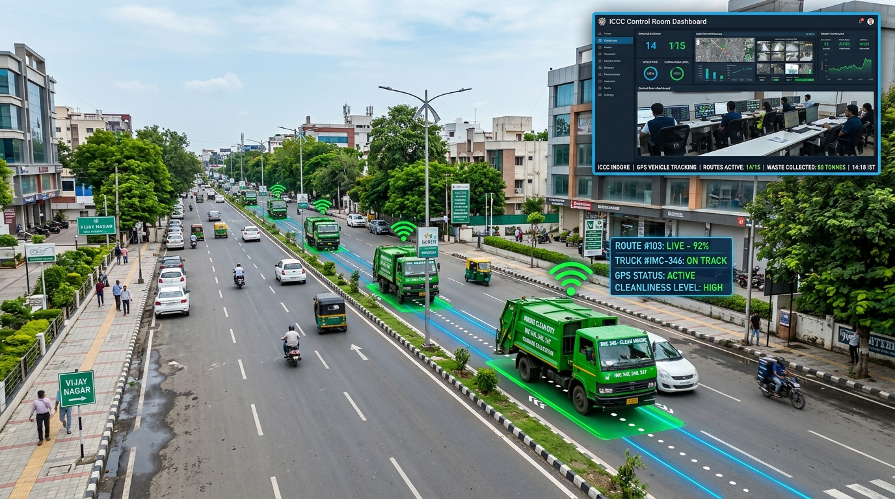
Indore, Madhya Pradesh (Consistently India's Cleanest City)
Collecting waste daily from over 500,000 households without service lapses or missing unsegregated bins.
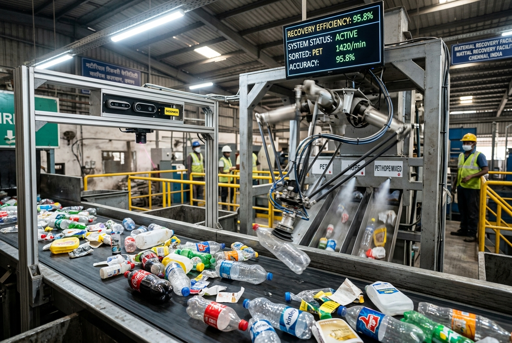
Ahmedabad & Bangalore
Low sorting efficiency of mixed plastics, high human health hazards, and contaminated waste bales rejected by recyclers.
Delhi-NCR & Western India
Verifying contractor claims and progress in bio-mining legacy waste mounds running into millions of cubic meters.
The Path Ahead
Smart kiosks across railway stations and metro stops that recognize crushed bottles using computer vision and issue instant UPI micro-incentives to citizens.
Moving sanitation vans scan streets for illegal roadside debris, auto-geotag the location, and issue automated collection work tickets.
AI camera features in municipal apps that verify if household trash is correctly segregated before collection, awarding green credits or utility rebate points.
Developing localized waste dataset libraries (annotating typical Indian waste like coconut shells, gutkha pouches, and clay kulhads for YOLO vision models).
Integrating open-source routing APIs into Ward-level sanitation vehicle planning.